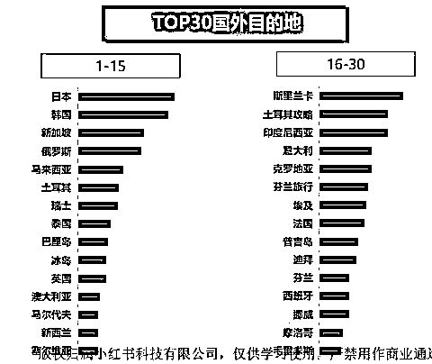

来源：https://tnqr6xnium.feishu.cn/docx/Mk7ddPBWJoBtYgxzuePctAnIn5z
最近小红书旅游赛道比较火，从7月初到现在，我做了半年新西兰旅游了，自己成交的订单总销售额260W+，每一单的客单均价，跟团游2W左右，定制游10W左右。8月份开始，先后带了几十个圈友一起深耕这个赛道，好几个圈友已经做出了很厉害的成绩并打算继续深耕。我也很荣幸被生财官方连续邀请为11月、12月航海训练营的小红书旅游赛道教练，和1000多名圈友一起探索小红书旅游赛道。
这篇文章，详细分享一下我这半年做新西兰旅游的经验，从发笔记到成交，全流程毫无保留。文章最后是我对新人入局的建议，希望能给大家一点启发。
一提到高客单境外游，很多圈友就想到了欧洲。根据我们的经验，对新手来说，欧洲不是一个好的选择。原因有4点：
欧洲申根签证的申请非常繁琐，对申请人的资产要求很高，申请时间长，一般要1-3个月。同时，由于西方国家针对中国，疫情后拒签率很高。
根据欧盟规定，12周岁以上的申请者本人均须前往签证中心录指纹、拍照。
签证中心设在北京、沈阳、济南、武汉、上海、杭州、南京、广州、深圳、重庆和成都等地的使领馆，不在上述地区的游客还要专门跑一趟。
跑外地就算了，因为全国都集中在这几个城市，很难约到，现场排队的人也是非常多，体验不好。
很多国际航班没有完全恢复，航班邮箱，导致机票价格居高不下。疫情三年，全世界货币超发很严重，导致通货膨胀居高不下，同时俄乌战争导致欧洲能源和农产品成本暴涨，欧洲接待费用上涨不少。
很多大的旅游企业，比如，同程旅游、众信旅游，都在小红书布局很久了。
我们跟一些做境外游旅行社沟通，不少旅行社都表示，由于种种原因，2023年欧洲游只占很小一部分业绩。
不过旅游的变化也很快，随着我们国家最近单方面对法国、德国、意大利、荷兰、西班牙等欧洲国家实行免签，2024年签证手续、录指纹等手续复杂的问题有望改善。
比如：
重磅！法国对中方免签回应：持硕士学位可获5年签证！
https://www.163.com/dy/article/IKK9TBGU05169EA1.html
欧洲有丰富多样的文化、历史悠久的背景、美丽的自然风光、高质量的教育以及良好的生活质量。这些因素共同塑造了欧洲成为一个受游客喜爱和向往的旅行目的地。因此，对想做境外游的圈友，欧洲作为一个长期发展的对象，还是有很多优势的。
小红书官方每个月的15号都会出上个月文旅行业月报，根据11月的文旅月报，排名前30的国外目的地如下：

大家可以从上表中选择，但要注意下，旅游目的地有淡旺季，每个月的排名会有变化。
从专业的角度看，蓝海度比较复杂，我们10月份做的表如下：
对新手来说，只需要关注一个数据就行了，笔记数量：
在小红书的搜索栏，输入目的地国家，就可以看到笔记数量了。我们看到，同样是热门国家，韩国旅游的笔记有112万篇，斯里兰卡旅游是2万篇。很明显，韩国旅游非常卷，在小红书的竞争对手相对更多。
那么新手做斯里兰卡，笔记更容易被客户看到，引流效果也会更好。
做境外游，合作的旅行社非常关键。我们先后和国内、国外的旅行社都合作过，现在是倾向于和目的地的旅行社合作。
比如，做斯里兰卡，就和斯里兰卡的华人旅行社合作。
境外游的客单价比较高，客户花了这么多钱，对行程的要求自然会很高。国内旅行社在这方面，至少有3个劣势。
第一，价格高。
国内旅行社收客之后，是要转给国外旅行社接待的。国外旅行社给一个结算价，国内旅行社加上10-20%的利润，给客户报一个外卖价。国内的几家旅行社看过我们新西兰跟团游的价格，都说，价格太低了，他们做不到。
第二，产品少且同质化。
国内旅行社，是包含国际机票的。为了保证成团人数，只能在固定日期发团，所以团期很少，产品少。更痛苦的是，你会发现这些产品的同质化非常严重，因为它们是来自同一个旅游产品批发商。而国外旅行社是可以每天发团的，自研产品丰富，搭配灵活。
第三，客服不专业，无法提供个性化行程
不管是跟团游还是定制游，客户会有很多问题，国内旅行社的客服几乎都是没去过目的地的，回复上会有延迟和不准确。而国外旅行社的客服对目的地了如指掌，能给出准确的答复客人的问题，并给出详细的建议。
在定制游的行程制定上，国外旅行社对当地的资源非常理解，能根据客人的需求，制定出个性化行程。
比如新西兰跟团游，客人经常问：
凯库拉观鲸和奥克兰观鲸有什么不同？
库克山和约瑟夫冰川乘坐直升机有什么不同？
在蒂卡普，参加哪个观星团比较好，区别是什么？
国外客服体验过，她们给客人的描述，与国内旅行社网上搜答案得来的描述，客人能很明显的感受到不同。
如下图：
这组台湾客人的要求比较多，我们都能满足，被夸耐心，还能在跟团的空档，找留学生带她们玩。
再比如定制游，我们能找到令客户念念不忘的美食，也能带客人住进农场，深度体验农场主的生活。
如下图：
客人对新西兰的这家餐厅赞不绝口，要求回去吃第二次：
我是有新西兰旅游的资源，如果没有怎么办呢？下面给大家一下我们压箱底的2个方法，我和一些圈友用这2个方法找到了好多家国外旅行社，亲测非常好用。
比如，我们要找日本当地的旅行社。
方法一：
bing国际版搜索：日本旅行社
前面是广告，后面有很多家日本当地的旅行社，联系就好了。
方法二：
打开大众点评，地点选为东京，搜旅行社，详情页有电话，打过去联系就好了。
在我写的这篇文章里面，我讲到了怎么做旅游类爆款笔记，：
大家从我上篇文章能看到，我前后切换了3个赛道，都是很快就出了爆款笔记。因为做小红书的道理，都是相通的，能在一个赛道做出爆款，就能复制到别的赛道。
我系统的学小红书，主要是靠这本书：
其实，我之前也学过小红书，书看了好几本，课程也学了不少，但是落地不了。让我一度以为，小红书太难了，我学不会。看完这本书，我就一个感慨：真传一句话，假传万卷书。可以说，这本书就是做小红书的九阴真经。我买了3本《爆款小红书》，办公室、卧室、书房，各放了一本，反复学反复看。
解决了爆款笔记的问题，接下来就是怎么大量加客户的微信了。10月份前，个人号可以加客户微信，我单号一个月能免费加200多个。但11月底，小红书突然收紧了政策，我们每天加微信超过1-2个，就被平台检测出来，也有同行说每天私信超过10个，就会被平台检测出来。
【交易导流商业秩序治理规则公告 - 薯管家 | 小红书】 http://xhslink.com/xJVEKx
同时，个人号从个人简介到发笔记，都会受到严格的限制。要长期做，必须开通旅行社企业号，开通聚光投流。
先要认证企业号，小红书旅游企业号，除了营业执照，还要有旅行社经营许可证。根据小红书平台的最新规定，一张营业执照只能认证2个企业号。要开通聚光投流，必须是境内的旅行社，境外的旅行社不能开。我是找国内的旅行社帮忙，认证了几个企业号。
有圈友想自己开旅行社认证企业号，这个很难的，看下要求：
根据小红书最新的政策，每个月累计投流金额不少于1000元，可以开通白名单，不限制加微信。
投流是一个技术活，需要烧钱，才能获得经验，不是短期内能学会的。之前有个圈友做云南旅游，自己投流，花了3000多，加了十几个微信，0成交。
我学了一段时间投流，加微信的成本非常高。后来找了一个投流手帮我投，效果挺好的，目前新西兰旅游客户加一个微信大约10-15元。每天投200块钱，微信就聊不过来了。
投流是锦上添花，不是雪中送炭。
投流就是把你的笔记曝光给更多的用户，但如果你的笔记不优秀，用户不点开，就是白花钱。我们做投流的前提，一定是这篇笔记的自然流量很好，吸引了基础的客户，才去开投流。要不，就是想上面说到的圈友一样，白花钱。
此外，笔记引流来的客户是否精准，又是个考验。因为加每个微信都是有成本的，成交率如果上不去是亏钱的。在写笔记的时候，我们就要做好目标客户的筛选。具体怎么做，前面的那本书和谢无敌星球，都详细讲了。
投流还有一个坑，开通聚光后，小红书聚光投流的官方人员会联系你，说指导你投流，如下图：
他们没有投流实战经验，只会让你不断地充值，因为他们要完成销售业绩。我们有几个圈友，听信了聚光官方人员的话，投了不少钱，基本没效果。
你只要花上100-300元，就能测出你的投流成本价。这是小红书官方给出的11月投流成本价，如果偏离太多，投流肯定有问题。
跟团游的行程是固定的，经过一段时间的学习，我们是可以独立做成交的。
我们先让旅行社做个产品培训，对行程中的每个景点、餐厅、住宿等逐一做详细讲解，并列出和竞品的不同以及产品的亮点。
境外游都会问到机票和签证，这些知识你也要学习。
跟团游，客人的问题，99%都是一样的，做上1个月客服，你就能成为一个老手。
我做新西兰本地旅行社的跟团游产品，成交率很高。同时也做过国内旅行社的新西兰跟团游产品，目前0成交。
因为跟团游，客户对比的是各家的行程，成交技巧比较少。成交与否，靠的还是产品差异，吃得怎么样，住的怎么样，玩的怎么样等等。
我做新西兰定制游，不含机票和签证，客单价最低是7W人民币，最高是22W人民币，均价大约是10W人民币。高客单定制游的成交，还是非常考验成交能力的。
我是这样做成交的：
客人加我后，拒绝掉我们不能做到的要求，提出我们的产品，2个人的参考价格是每天1600纽币（7200人民币）。
注意看客人的回答，他很快的回答：也行，说明是我们的目标客户。否则，他会说贵或者不回复。
我们的跟团游，吃住行玩一价全包，每人每天大约是300纽币；定制游，参考价格每人每天是800纽币，最终报价往往会更高，还不含餐、不含景点门票。
为啥我上来就报价？
因为我每天加的微信太多了，根本聊不过来，2-3句话内，就要完成筛选。
客人接受报价，我们就要展示产品的特色。我找一个客户写了一篇笔记，然后再附上类似的行程单。
这篇客户笔记在我的成交中起到了非常大的作用，好几个客户事后说，看完笔记，马上有购买的欲望。
我们的每一个行程单，都是很用心做的，客户看完也很喜欢。
展示了高价值，客户有了下单的欲望，就要赶紧锁定，收定制费。旅行社都是免费给客人做行程单，但我们一直是收费的。不交定制费，不做任何服务。
我带一些圈友实操的时候，国内的旅行社不理解。合作的云南旅行社给我说，我们做行程向来都是免费的，我们还幻想过收定制费，但觉得不现实。
我在上海，跟生财的旅游大佬许义老师见面的时候，说我们收定制费。许义老师很是惊讶，问我怎么收的。
经过我的教学，合作的云南和西安旅行社，都学会了收定制费，成单效果也非常好。两家旅行社的负责人都说，真是没想到，居然这么快就把她们的幻想实现了。
高客单定制游，一定要是目的地旅行社的客服和一线导游，一起来做行程单的。国内的很多旅行定制师，自己都没去玩过，就给客户做定制行程，纯纯的纸上谈兵，效果也可想而知。
我们在跟客户的沟通中，总结出了一套方法和流程，能很快的发现客户的需求，并由定制师精准匹配，然后导游做行程确认，效率很高，客户对行程的满意度也非常高。客户对行程满意，对专业度很认可，付款就是水到渠成的事情了。
当然，让客户付款牵涉到很多因素和技巧，限于篇幅，这里就不展开说了。大家如果有兴趣，我后面再写一篇文章，用几个成交案例，详细讲解如何成交高客单用户。
成交只是销售的开始，客人付款后，我们一定要配合旅行社，继续做好后面的服务工作，直到行程结束。
先说结论：因为小红书最近突然收紧引流，能力要求会高一些，但依然是红利期。
【交易导流商业秩序治理规则公告 - 薯管家 | 小红书】 http://xhslink.com/xJVEKx
之前，个人号可以加客户微信，我单号一个月能免费加200个，但现在小红书特别严格，要长期做，必须开通旅行社企业号，开通聚光投流。
除了引流，后面还有成交、淡旺季等问题。新人要想作为一个长期赛道全职做，还需要全面考虑。
新人入局，前期量小可以先用个人号入门，不要怕封号，交易引流被检测出来，依次是警告、7天禁言、14天禁言、30天禁言、封号。多准备几个个人号，完全可以跑通项目，后期放大再考虑企业号。
再详细说下：
首先，必须要说，小红书投流和旅游赛道，目前还是有红利的。但圈友们最关心的，还是新人能不能吃到这波红利，以及能不能作为长久的赛道做。
我的回答是：任何行业都有门槛，这个项目也不例外。从我的故事里，圈友们能看到，要深耕旅游赛道，需要跨过几个门槛。你先要看下，你能否突破这几个门槛。
我认为，判断一个项目是不是好项目，主要看两点：
1、有一定门槛，正规并处于红利期。
2、天花板高，能作为长期事业去做。
如果你做过销售，就知道客人的问题会千奇百怪，旅游业也不例外。你必须对产品非常了解，最好是实地走过，旅游业的术语叫踩线。
对新手来说，需要花很大时间去研究旅游目的地，最好做到百科全书，无所不知。让客户感受到你是专业的，才会找你下单。否则，一问三不知，或者临时去问旅行社，导致回复速度很慢，就很难成交客户了。
在一些暴利行业，比如医美、留学、滋补品等，你只需要给微信，成交后就有不菲的佣金。但旅行社是传统行业，利润低。所以只给微信，最多拿到成交额5%的佣金。想多拿佣金，必须做到自己成交。
微信做成交，很适合以前做过微商的宝子们。但对新手来说，要从0开始学成交，需要一个过程。
旅游是个红海行业，产品同质化，价格战很激烈，必须要提炼出你的产品亮点。这需要旅行社的深度支持。特别是境外高客单定制游，花了这么多钱，你必须让客户感受到物有所值，这对后端旅行社的要求非常高。
最近开始，小红书平台的管控变得很严格。个人号从个人简介到发笔记，都会受到严格的限制。如果长期做，需要你找一家旅行社提供营业执照和经营许可证，帮你认证企业号。小红书的最新规定是，一家旅行社只能认证2个企业号。
小红书最近的管控严格，也体现在交易引流上。相信做小红书的宝子们最近也有体会，还没引流几个微信，就被禁言了。唯一办法就是认证旅行社企业号，首冲5000元，开通聚光投流。目前小红书对投流消费的要求是：每月投流1000元，可以加白名单，不限制引流。后面肯定会提高要求。
投流是一个技术活，需要烧钱，才能获得经验，不是新手能玩的。之前有个圈友做云南旅游，自己投流，花了3000多，加了十几个微信，0成交。
此外，我们加的客户，是否精准，又是个考验。因为每个微信都是有成本的，成交率如果上不去，是亏钱的。目前加一个微信大约是20-60元，按照一个月最少加200个微信，又是几千块钱的成本。
境外游的淡旺季是非常明显的，因为境外游要有长假期，每年也就五一，十一，暑假和春节，满打满算4个月，其余8个月都是闲着。8个月没单的日子，我只能做别的赛道。我是有预期，但是新人全职进来，能接受8个月不开单吗？
淡季没单子，好容易盼来了旺季，又接不了单。大家休假都是集中在寒暑假和五一十一，酒店、导游、用车价格疯涨，资源很容易饱和。新西兰2月份春节期间的团，12月初已经基本满了，我早就开始拒单了。问了下做日本旅游和欧洲旅游的旅行社，春节的订单目前也是爆满了，来了单子也接不了。换句话说，从现在到5.1，又要迎来至少3个月的不开单期。
憋了4年，旅游报复式反弹，现在确实是旅游和小红书的红利期。和我一起探索的十几个博主，出单都很棒，但是因为小红书突然收紧引流，新人入局门槛有点高了。
我觉得，对于想深耕的人反而是个好事，免费玩家没法玩了，流量都集中到付费玩家了。我们做投流，现在挺爽的。
如果你有强大的后端，或者你本身是旅行社或旅游行业从业人员，建议可以尝试。因为小红书用户精准，人群消费力强，深耕小红书旅游号还是非常香的。